Ciudad de México
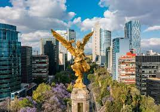La capital de México ofrece una rica historia y cultura, con lugares de interés como el Zócalo, el Palacio de Bellas Artes y la Catedral Metropolitana. Algo que distingue a la Ciudad de México son sus barrios con identidad propia. Descubre el ambiente cosmopolita de Polanco, Condesa y la Roma, los paseos en trajinera en Xochimilco o las encantadoras calles de Coyoacán. Y si tienes más tiempo, escápate a las pirámides de Teotihuacán o sal de compras a Reforma 222, Perisur o Antara.
Chichén Itzá
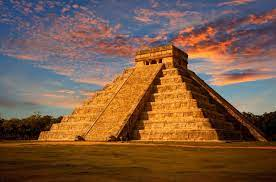Esta antigua ciudad maya en la península de Yucatán es famosa por su pirámide escalonada, El Castillo, y otros impresionantes templos y ruinas.
Puebla
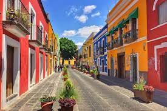Puebla es una de las ciudades mexicanas más completas en cuestiones turísticas. Al caminar por el centro histórico, descubrirás su impresionante arquitectura colonial y algunas de las iglesias más bonitas del país, como la Catedral de Puebla y el Templo de Santo Domingo.
Queretaro
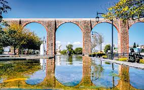Querétaro es una de las ciudades más bonitas y modernas de México. Más allá de su belleza, Querétaro ha sido testigo de importantes acontecimientos históricos, como la conspiración que terminó en la Guerra de Independencia y el fusilamiento de Maximiliano, en el Cerro de las Campanas.
Coahuila
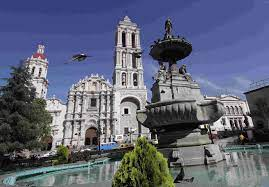El estado de Coahuila es un destino poco explorado aún; sin embargo, tiene una gran cantidad de atractivos turísticos que te encantarán. Sus ciudades más grandes son Saltillo, Torreón y Monclova, que son los puntos de partida perfectos para adentrarte en sus tesoros.
Chiapas
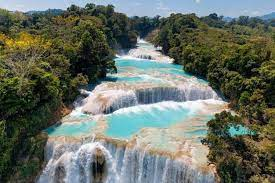Chiapas es de esos lugares que tienes que ver con tus propios ojos para dimensionar lo bonito que es. Si te interesa la cultura maya, el estado cuenta con algunos de los sitios arqueológicos más impresionantes de esta civilización. Entre ellos destacan Palenque, Yaxchilán y Bonampak.
Teotihuacan
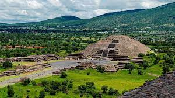Este sitio arqueológico alberga algunas de las pirámides más grandes de Mesoamérica, como la Pirámide del Sol y la Pirámide de la Luna, y es famoso por su arquitectura y su importancia histórica.
Xochimilco
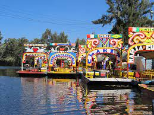Este sistema de canales y jardines flotantes es un Patrimonio de la Humanidad por la UNESCO y ofrece la experiencia única de navegar en trajineras (embarcaciones tradicionales) mientras se disfruta de música, comida y bebida.
Palenque, Chiapas
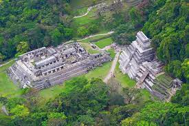Este sitio arqueológico en la selva tropical de Chiapas es conocido por sus impresionantes ruinas mayas, que incluyen templos, palacios y una pirámide, rodeados de exuberante vegetación.
Guanajuato
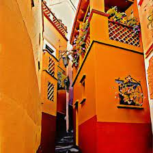Esta encantadora ciudad colonial es famosa por su arquitectura colorida, sus calles empedradas y sus túneles subterráneos, así como por el Festival Internacional Cervantino, uno de los eventos culturales más importantes de México.
Oaxaca
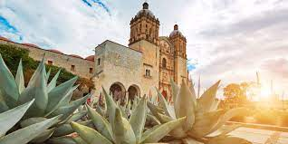La ciudad de Oaxaca es famosa por su arquitectura colonial, su gastronomía única, su artesanía tradicional y sus festivales culturales, como la celebración del Día de Muertos.
Copper Canyon (Barrancas del Cobre), Chihuahua
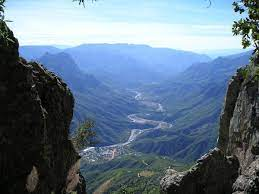Este sistema de cañones en la Sierra Tarahumara es más grande y más profundo que el Gran Cañón en Estados Unidos, y ofrece vistas espectaculares, actividades al aire libre y oportunidades para explorar la cultura rarámuri.